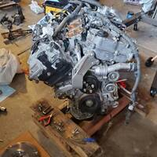
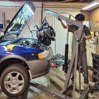
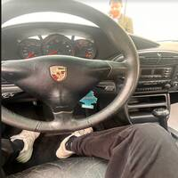

This is more of a test blog post to learn HTML for myself. Mostly explanation of things I did and their surviving pictures. I never bothered leaving a record of all the things I've done with my personal projects, which I felt it leaves a big chunk of my life out when I wrote my resume or meet recruiters. Also I found a lot of joy in writing these blogs and putting whatever I like on these pages, especially the absolutely smashed 200x200 images. I will probably make a seperate project page more in depth of each of these project cars in the projects folder.

It all started in my sophomore year of highschool. I saved up $1000 in allowances, cleaning cars, tutoring, etc. The usual mechanic my dad goes to had a 1993 Toyota MR2 sitting in the front of the shop for about 6 years, with nobody to take care of it or drive it. It needed a retard to pick up the project and put in a 300HP V6 engine from a 2014 Toyota Sienna. Like Paul Walker's Supra from FF1.

Well, I was only 16 when I had the responsibility of a project car, Especially an engine swap, in my parent's garage...
I am so thankful for my parents to let me absolutely distroy their beautiful 3 car garage. I set my car on fire 2 times, and there were about a thousand oil spills in the garage, all the stains show my hard work, but its no longer the beautiful garage they paid for.
The 3.5L 300HP beast of a motor available from $500-1500 range, came in the V6 Camrys, Highlanders, Siennas, and even the Lotus Evora, is one of the greatest engine Toyota has ever produced
None of this would have happened without the help of Frankenstein Motorworks community, and Marc Blanc's videos on youtube. I give all my credits to the help I got, which without the help I would have never gotten anywhere with this project.
Please check out his videos, if you want.
So basically, I shoved in a pretty modern engine into a pre-OBDII chasis, however, there weren't many challenges. Like how in coding we focus on modular and independent code with less dependencies, Toyota engineered each modules of the car independent of each other, so I only had to fiddle with the ECU (Engine Control Unit) wiring harness. Now I feel like I might go way too much in detail instead of actually working on my project for this winter on this blogpage, so let's leave it there at "theres a lot to put a different engine in a different car".
 I don't wanna focus more on this single blog, I feel like each of the cars I touched deserves its own project page, that goes much in detail, and I need to find more pictures.